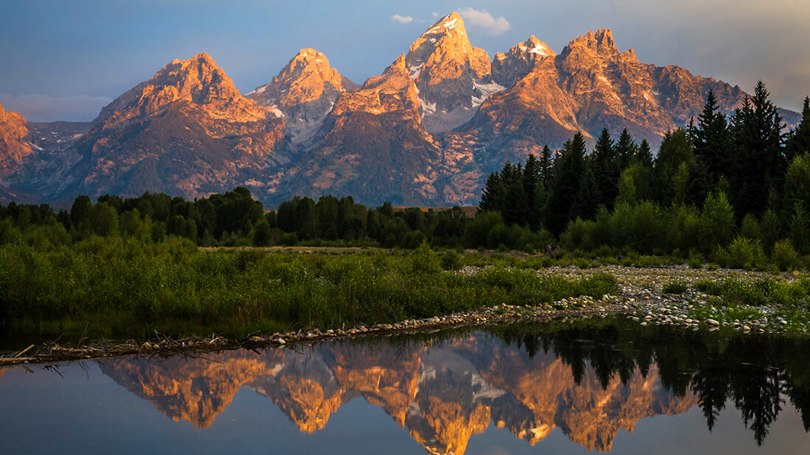
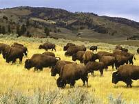

My family vacation - The Yellowstone Trip
Date : 2011-10-09
Day 1- Grand Tetons
our vacation to Yellowstone is the best vacation we’ve ever had. This is our country’s first national park. It's a dream locations.. nature at its best!!!
The first stop was the grand Tetons!!

We had loads of fun going up the mountains and the tram and enjoying the world down below.... what a site !! We spent most of the morning on the mountains and the afternoon at Jenny lake with a boat ride in the lake
The evening was spent at a beautiful resort overlooking the Tetons. I tasted the elk meat for the first time.... was interesting... not a fan though :-)!
Day 2- In the park
The bison were my absolute favorite animal at Yellowstone. As soon as we entered the park, we received flairs asking us not to aggravate these animals and they are extremely dangerous.
I think they are beautiful animals. And I guess their comeback from near extinction appeals to me somehow. Is it bad to admit that I thought buffalo meat was delicious? We had buffalo pot roast, buffalo meatloaf, buffalo chili, and buffalo burgers. All were delicious.